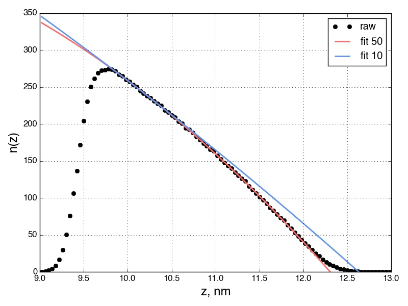
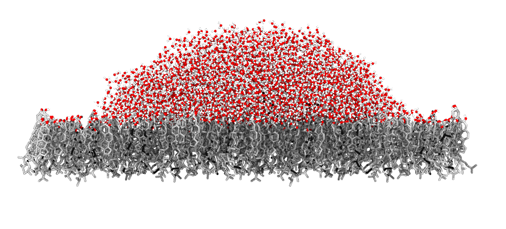

Contact Angle Calculations
This package provides routines for calculating contact angles from MD simulations of surface wetting. A script to calculate the contact angle would look something like:
>>> import contact_angle as co
>>> import matplotlib.pyplot as plt
>>> import mdtraj as md
>>> import numpy as np
>>> traj = md.load('wetting.xtc', top='wetting.gro')
>>> ca = co.calc_contact_angle(traj.xyz[50:, 29600:], guess_R=1.5,
guess_z0=2.0, guess_rho_n=1.0, n_fit=55, left_tol=0.1,
z_range=(9, 13), surface_normal='z', n_bins=100)
>>> co.print_contact_angle_results(ca)
Contact angle fitting results
-----------------------------
contact angle = 52.6266050581 degrees
R_fit = 6.78317095664
z0_fit = 5.52256848571
rho_n_fit = 79.3187821804
height = 2.66573944234
right intercept = 12.3057394423
left intercept = 9.64
>>> fig, ax = plt.subplots()
>>> ax.plot(ca['z'], ca['nz'], 'ko', label='raw')
>>> ax.plot(ca['z'], ca['nz_extrapolated'], 'k-', label='fit')
>>> fig.savefig('fit.pdf')
where we skip the first 50 frames and the molecules in the droplet have indices greater than 29600.
Note that the algorithm fits a parabola to the calculated number density profile, and that the number of points used in the fit can affect the final answer. Therefore, it is advisable to validate your results by
- visualizing the system to make sure the final answer is reasonable, and
- visualizing the results of the fitting.
calc_contact_angle() returns a dictionary containing the information necessary to visualize the fits. The results of fitting to 50 and 10 points (i.e., n_fit = 50 and 10, respectively) are shown below. Although seemingly similar, fitting with just 10 points gives a contact angle of 18 degrees, versus the more accurate value of 53 degrees when using 50 points. This can also be seen comparing to a snapshot of the system, shown below. Clearly, the contact angle is closer to 53 degrees than 18 degrees. This illustrates the need to validate.


Currently, several assumptions are made for the calculations:
- The vector normal to the surface is parallel to the z-axis
- The droplet is above the surface in the z-direction
These changes will be implemented as needed - feel free to make changes and submit a pull-request.